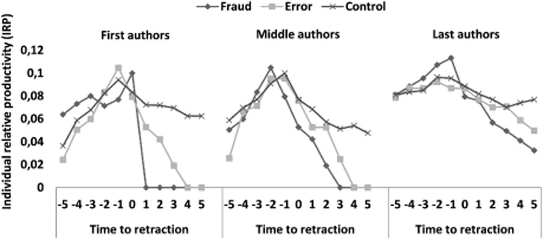
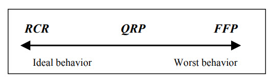

11 Scientific fraud and questionable research practices
Diederick Stapel, Eric Poehlman, Jan Hendrik Schön, Woo-Suk Hwang, Marc Hauser, Yoshitaka Fujii, Joachim Boldt, John Darsee… These names are associated with some of the most important scientific frauds of the last forty years. Their frauds made the headlines of major daily newspapers and caused shock waves within the scientific community. These individuals built their careers misleading their colleagues and the scientific community by publishing falsified or fabricated data. They wasted public funds, misled other researchers, and undermined public trust in science. These are just a few consequences of scientific fraud. In the medical field, however, these consequences can be much more serious, even fatal: the choice of treatments and drugs given to patients is based on scientific research, and fabricated findings can thus have very serious health consequences. Given the magnitude of the potential consequences that scientific fraud can have for researchers, their science, the public, and society at large, it is hardly surprising that this topic has generated heated discussion both within and outside the outside the scientific community.
11.1 What is research fraud?
There are various means by which an ill-intentioned researcher can mislead the scientific community. Babbage (1830) described four types of fraud: forging, cooking, trimming and hoaxing. Today, these phenomena tend to be grouped under two concepts, data falsification and data fabrication, to which plagiarism has been added as a third type of fraud. Following the rise of cases of research fraud in the 1980s, the US Public Health Service proposed the following definition of scientific fraud:
[The] fabrication, falsification, plagiarism or other practices that seriously deviate from those that are commonly accepted within the scientific community for proposing, conducting, or reporting research. It does not include honest error or honest differences in interpretation or judgments of data (US Public Health Service 1989).
The clause “or other practices that seriously deviate from those that are commonly accepted within the scientific community for proposing, conducting or reporting research” was heavily criticized for its vagueness and its inability to reduce discrepancies between opinions on what does or does not constitute fraud, so this clause was later dropped (Judson 2004). Today scientific fraud is generally recognized as any intentional act of data fabrication, data falsification or plagiarism (FFP), and other practices that seriously deviate from those that are commonly accepted within the scientific community for proposing, conducting, or reporting research tend to now be labelled as questionable research practices (QRP).
11.1.1 Fabrication
Data fabrication is probably the most serious type of scientific fraud and occurs when researchers makes up all or some of their data from scratch without having carried out the alleged experiments. Data fabrication can take many forms.
A widely publicized example of fabrication is that of Diederik Stapel, a former Dutch social psychology researcher. Before being found guilty of scientific fraud, Stapel was a star researcher in his field, having, among other things, founded the Tilburg Institute for Behavioral Economics Research in 2007, obtained the Career Trajectory Award from the Society of Experimental Social Psychology in 2009, and being appointed rector of his faculty in 2010. However, in 2011, after some of the students under his supervision expressed concern about the validity of some of his data, an investigation revealed that for more than a decade Stapel had invented the data for most of his research. More than 50 articles signed by Stapel and published in the most important journals in the field have been identified as fraudulent and subsequently retracted from the scientific literature.
Another well-known case, this time in physics, is that of Hendrik Schön, who fabricated data for more than four years (1997-2002) while he was a postdoctoral fellow at Bell Laboratories. He was able to fool the scientific community with his discovery of a method to manufacture plastic superconductors that would revolutionize the world of nanotechnology. Schön’s articles were published in major journals like Science and Nature. Some researchers began to question Schön’s results when several attempts to replicate Schön’s findings were unsuccessful. However, it was Schön’s use of the same fabricated figure in two different papers that ultimately uncovered the fraud (Reich 2009).
11.1.2 Falsification
Babbage (1830) described two types of falsification. The first one, cooking, consists in the cherry-picking of data in order to achieve a desired finding. The second, which Babbage called trimming, consists in eliminating data points that deviate from the average and artificially increase the precision and homogeneity of the data. Larivée and Baruffaldi (1993) argue that falsification is not only about cooking and trimming data but can also include the misuse of statistical tests or the altering of equipment or data collection processes. The main difference between falsification and fabrication is that falsification involves real data, whereas fabrication involves data artificially created.
Isaac Newton, one of the most important figures in the history of science, apparently falsified some of the data described in his masterpiece Philosophiæ Naturalis Principia Mathematica. He improved the precision of some measurements, namely his calculations on the acceleration of gravity, the velocity of sound, and axial precession (Westfall 1973), to make his theory more convincing and accepted by the scientific community at the time Broad (1983).
11.1.3 Plagiarism
Plagiarism, which is said to be the most frequent type of scientific fraud (Merton 1957), can be defined as:
[T]he appropriation of another person’s ideas, processes, results, or words without giving appropriate credit, including those obtained through confidential review of others’ research proposals and manuscripts (US Public Health Service 1989).
This can take the form of excessive paraphrasing or intentional, unconscious, or self-plagiarism. Intentional plagiarism is the use of someone else’s text in part or in whole without citing the source. Paraphrasing is a perfectly acceptable practice, but it becomes abusive and akin to intentional plagiarism when the words have been changed in order to give the illusion that it is a new text, and when the sources are not cited (Kochen 1987). Self-plagiarism consists of the reuse of one’s own published text. It can be challenging to determine whether or not an instance of self-plagiarism is fraudulent, because the reuse of certain parts of texts may sometimes be acceptable or even preferable (e.g., the description of a very technical and complex methodology) provided that the source is duly cited (S. B. Bird and Sivilotti 2008). The concept of self-plagiarism itself is debated, some arguing that it is impossible to steal one’s own ideas or text, and that the publishing the same results in different articles aimed at different communities is not only acceptable, but desirable from an knowledge dissemination standpoint (S. J. Bird 2002).
A famous case of plagiarism in medicine is that of Elias Alsabti. In addition to falsely pretending that he came from a Jordanian royal family and that he held a doctorate, he managed to plagiarize several hundred articles. He found these articles in obscure journals, replaced the author’s name with his own (and sometimes that of fictitious co-authors), then submitted this copied article to another, equally obscure, journal. Building up an impressive publication record, he obtained research positions in several universities and hospitals in the United States. Although Alsabti’s fraud was known to many in the institutions where he worked during his career, it took three years before it was made public (Broad 1983; Judson 2004).
11.2 Consequences of research fraud
For the guilty researchers, fraud has informal consequences in the form of a loss of reputation (Larivée and Baruffaldi 1993) and the questioning of all their work by the scientific community (Culliton 1974). There are also formal consequences that vary from case to case. These can include a ban on obtaining funding for a certain number of years, suspension, dismissal, house arrest, community service, fine and imprisonment (Couzin 2006; Karcz and Papadakos 2011; Tilden 2010). Mongeon (2015) found that most researchers found guilty of fraud in the biomedical field did not publish in the 5 years following the retraction of their fraudulent papers. That same study found that fraud can also significantly affect the careers of innocent co-authors, especially junior researchers who, in most cases, stopped publishing and appear to have abandoned their research careers (see the figure below).

It is perhaps worth noting that, according to these findings, retracting a publication because of an honest error also appears to significantly affect the careers of junior researchers (who are typically listed as first authors in biomedical research).
Because researchers build on existing research to advance knowledge, the publication of false results can lead to considerable waste of time, money and effort for a large number of researchers, not to mention the waste resulting from the fraudulent research itself. Fraud can reduce mutual trust between researchers, potentially hindering the advancement of knowledge by reducing the sharing and use of information, or pushing researchers to systematically reproduce the experiments (Chubin 1985; Weinstein 1981).
Cases of fraud can also negatively affect the discipline in which they occur. According to Azoulay et al. (2015), there would be a decrease in both the research funds granted to researchers in a discipline where a fraud has been discovered, new researchers entering it, and citations received by articles dealing with subjects similar to those of fraudulent articles.
Funding for research comes largely from public funds, and it important that science be seen as trustworthy by governments, funding agencies and the public. Research fraud, and especially the cases that generate a lot of media coverage, can harm the credibility and legitimacy of science.
11.3 Detecting research fraud?
Given the significant consequences that research fraud can have, it is important for the scientific community be able to detect it. It is sometimes taken for granted that science is self-correcting and has mechanisms that will ensure that sooner or later errors (and frauds) will be discovered. However, the surge of research fraud observed over the last decades raises questions as to the effectiveness of these mechanisms.
One of these mechanisms is the evaluation of research manuscripts by several experts before they get published, also known as peer-review. In theory, peer-review ensures that only relevant, reliable, and rigorous research will make it into the scientific literature. However, peer review is often not effective in detecting errors and fraud. Researchers who are part of the elite will not be judged as harshly as other less prominent researchers (Merton 1968). A researcher who is prominent or affiliated to a prestigious organization may manage to publish fabricated or falsified data since the reviewers may not dare question their work. The case of John Long is a good example. From 1970 until the early 1980s, he published the results of his work on tumor cells from Hodgkin’s disease that he supposedly managed to grow in a test tube. Since he worked at the prestigious Massachusetts General Hospital under the supervision of Paul Zamecnik, a well-known researcher and member of the National Academy of Sciences, the peer review system took certain aspects of his work for granted (Broad 1983).
The peer review system is also quite ineffective in detecting plagiarism, and even more so in the pre-digital era. This allowed fraudsters like Alsabti to take advantage of this flaw. While it is now much easier to detect cases of plagiarism by using, for instance, plagiarism detection software, plagiarism remains relatively frequent (Grieneisen and Zhang 2012).
Replication of experiments by other researchers is the most effective mechanism for validating findings and detecting errors and fraud. The replication of (or the possibility to replicate) findings is made possible by the fact that research publications include a detailed description of the research data and process (a.k.a., the methods). In practice, the reproduction of experiments is relatively rare. One of the reasons for this is inaccurate or incomplete description of the methods, or inaccessibility of the required data or equipment. Even when replication would in theory be possible, there is a lack of resources and incentives for replication studies which are difficult to get funded and published due to the emphasis on originality in the reward system of science. Rather, the research will be validated indirectly by other researchers who replicate or build on results to improve them (not to verify them).
Whistle-blowing is often involved in the process of uncovering research fraud. For instance, Diederik Stapel’s case was uncovered by some of his students who grew suspicious when they asked to see the raw data for an experiment they were involved in and Stapel said he didn’t have it anymore. One of the whistleblowers thought Stapel’s results were too good to be true, and their suspicions were validated when they found two rows of data that appeared to have been copy-pasted.
11.4 Prevalence of research fraud
Just how much fabricated, falsified, or plagiarized research is there? Given that fraud is by nature something that its author seeks to hide and hope that it will never be discovered, and given that research fraud is not easy to detect, it is plausible that the cases that are discovered are really just the tip of the iceberg. Some attempted to estimate the prevalence of fraud using surveys. This approach is expected to underestimate the prevalence of research fraud since researchers are probably not very inclined to admit their fraud. Nevertheless, in a meta-analysis of these surveys Fanelli (2009), reported that 2% of researchers admit to having distorted data themselves, while 14% claim to know at least one colleague who has done so.
Retractions are one of the ways by which the scholarly community treats fraud when it is discovered. Retractions, in principle, clean up the scientific record by flagging invalid or untrustworthy research. The census of retracted articles thus makes it possible to estimate the prevalence of cases of fraud, but only on condition that the cases in question meet four conditions:
- The fraudulent research has been published.
- The fraud was detected after publication.
- The fraudulent article was retracted by the journal.
- A notice of retraction has been circulated and is easily identifiable, and ideally the article itself has been identified as retracted in the databases.
Thus, retractions also only provide an underestimate of the prevalence of scientific fraud since obviously not all cases of scientific fraud or error will meet these four conditions.
According to the Retraction Watch blog and its searchable database, more than 40,000 articles have been retracted as of November 13th, 2022. However, not all of these retractions are due to fraud. There are many reasons why articles get retracted, including honest errors and a range of issues that undermine the trustworthiness of the studies. Also, it is important to keep in mind that there are millions of studies published every year, so despite the increased number of retractions in recent decades, retractions remain extremely rare. Less rare are questionable research practices, which we discuss in the next section.
11.5 Questionable research practices
Questionable research practices (QRPs) exists in the grey zone between the responsible conduct of research (RCR) and fabrication, falsification, and plagiarism (FFP).

QRPs encompass a whole range of behaviours and practices that drift away from the ideal of the responsible conduct of research. They can occur at different stages of the research process and they are sometimes considered to not only apply to the individuals performing the research but also to other actors such as editors and reviewers. They also vary in their perceived prevalence and severity and these perceptions also vary between fields. Here are examples of QRPs:
Improper referencing: Attributing an idea or concept to the wrong source, failing to cite sources, or abusive self-citations. This include citing only studies that are in agreement with one’s findings.
Selective reporting: Reporting only some of the data and results of a study (typically only the positive results). Failing to provide adequate level of details in the different parts of the manuscript. Publishing only positive results (publication bias).
Salami slicing: Splitting what could and should have been a single work into multiple smaller publications, sometimes called “smallest publishable units”.
Not sharing data: While sharing data is not always possible for ethical or legal reason. Sharing data is increasingly expect by journals and other researchers and not doing so is often considered a QRP.
P-hacking: Performing all kinds of test and retaining those that produce significant results.
Harking: Coming up with the hypothesis after looking at the results and presenting it as an a priori hypothesis.
Authorship misattribution: failing to give credit where credit is due by excluding significant contributors from the byline, or giving credit where it is not due by including co-authors that did not significantly contribute to the work. Not ordering authors in a way that reflects their respective contribution to the work.